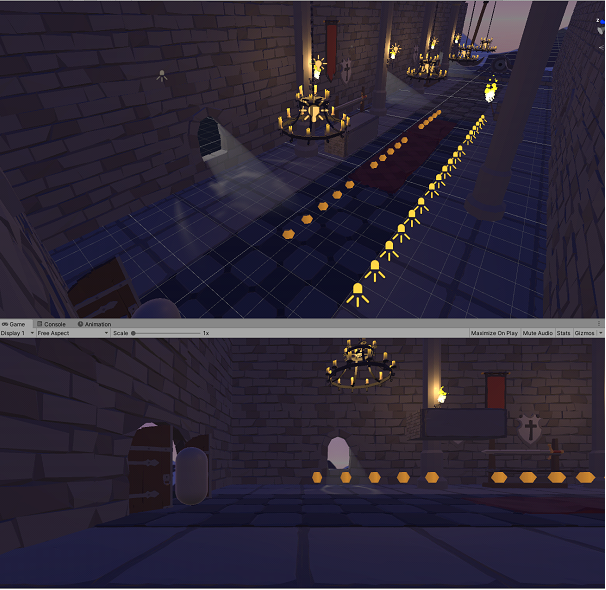

The first level of ‘Plunderer’ is designed to let the player test what they learnt during the tutorial level and see if they understand the game’s mechanics in practise. Nothing new will be introduced and all mechanics will be at their simplest level so that users will not feel overwhelmed. There will only be a few enemies and traps, and the level will be linear in design so that the exit can be easy to find. The player will need to use all movement inputs of the character to complete the level. This would most likely be the area where users first experience the death mechanic, as it is unlikely, but not impossible, for them to die during the tutorial.
The level starts upon the character entering the castle into the entrance hallway. Making their way through the hallway they will jump over patrolling enemies, then over a spike fall Trap. Jumping over another enemy after, they will come across a saw-blade trap. They will have to time when to move pass the blade. There is then another enemy in their way to get pass. The level ends when the player reaches the doorway at the end of the hallway.
Castle Concept


Scenario One: As a player, I want to be able to clear the level, so I can have fun playing the game.
Scenario Two: As a player, I also want to be challenged, so I feel like I achieved something.
Scenario One: Player starts level
Since the player has started the level, they have been shown the mechanics of the game in the tutorial. The first level keeps these mechanics as simple as in the tutorial, so that players have to knowledge to be able to clear the level.
Scenario Two: Player encounters enemies and traps
Since players have been shown how traps and enemies’ function, they should be able to clear them. However, the level is less structured then the tutorial, so players are challenged to find the solution to pass obstacles themselves.